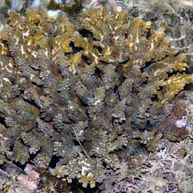
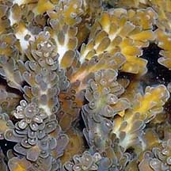
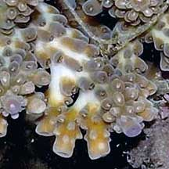
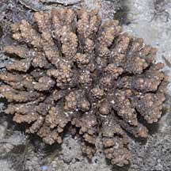
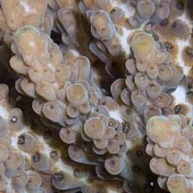
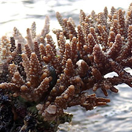
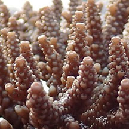
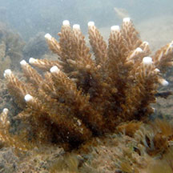
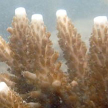

|
|
| hard corals text index | photo index |
| Phylum Cnidaria > Class Anthozoa > Subclass Zoantharia/Hexacorallia > Order Scleractinia > Family Acroporidae > Acropora sp. |
| Tubular
acropora corals Acropora sp.* Family Acroporidae updated Nov 2019 Where seen? These acroporal corals with tubular radial corallites are sometimes seen on some of our Southern shores. Features: Colonies 15-20cm. Tapering branches forming a bush-like shape. The branches don't interlock. Generally, the axial corallite at the growing tip is large and cylindrical. The radial corallites are smoothly tubular. Colours generally brown. There are probably several different species on this page. It's hard to distinguish them without close examination of small features and they are grouped by large external features for convenience of display. |
 Raffles Lighthouse, May 04 |
 |
 |
|
 Terumbu Semakau, Mar 11  |
*Species are difficult to positively identify without close examination.
On this website, they are grouped by external features for convenience of display.
| Tubular acropora corals on Singapore shores |
On wildsingapore
flickr
|
| Other sightings on Singapore shores |
\  Tanah Merah Ferry Terminal, Jun 23 Photo shared by Loh Kok Sheng on facebook. |
 Pulau Semakau (North), Apr 16  Photo shared by Loh Kok Sheng on his blog. |